Divers
Cette page rassemble des projets qui ne sont pas directement liés à mon enseignement ou à ma recherche. La plupart des applications présentées ici servent lors d’ateliers ou de présentations grand public.
Cette page rassemble des projets qui ne sont pas directement liés à mon enseignement ou à ma recherche. La plupart des applications présentées ici servent lors d’ateliers ou de présentations grand public.
| Projet | ||
|---|---|---|
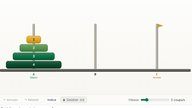 Les tours de Hanoï | ||
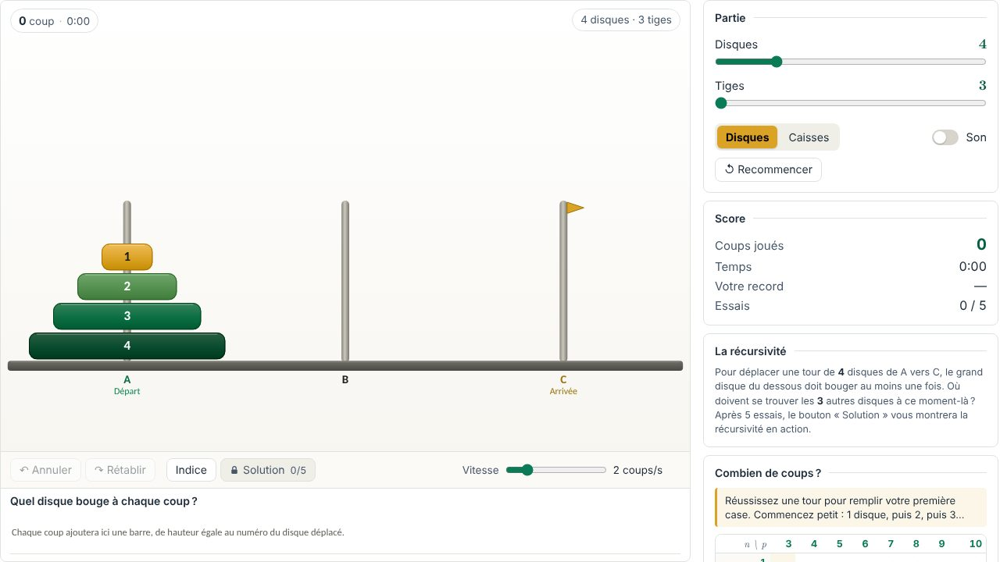 Déplacez la tour un disque à la fois, jamais sur un plus petit. Jusqu’à 15 disques et 10 tiges, la solution optimale animée et un problème encore ouvert. Pour ma présentation sur le travail des mathématiciens. | ||
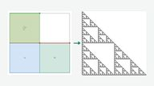 Générateur IFS | ||
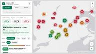 Prix de l’essence au Québec | ||
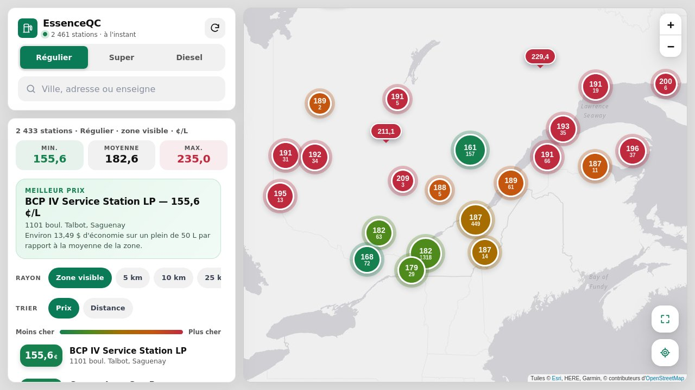 Les prix de l’essence et du diesel dans les stations-service du Québec, d’après les données de la Régie de l’énergie. Recherche par ville ou par enseigne. | ||
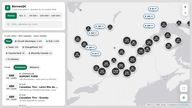 Bornes de recharge au Québec | ||
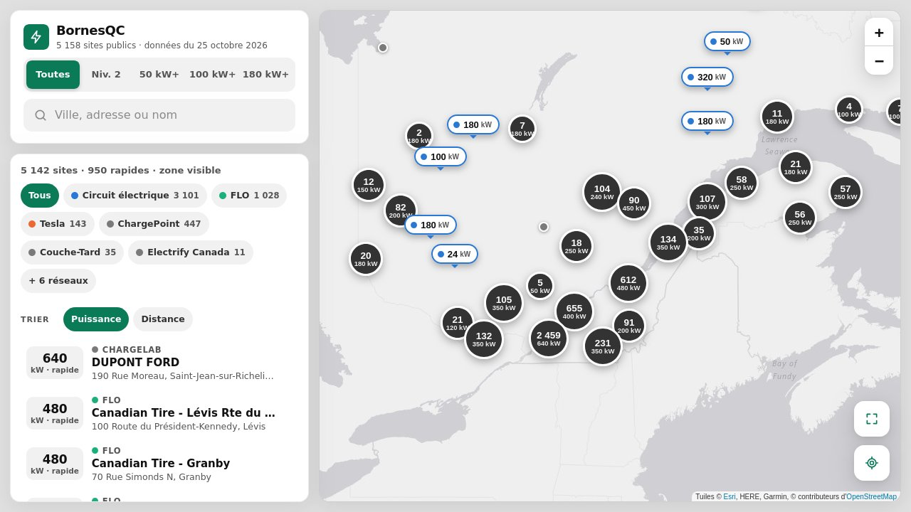 Les bornes publiques de tous les réseaux sur une même carte, filtrées par réseau et par puissance. Un premier prototype. | ||
| Projet | ||
|---|---|---|
Zelda: Ocarina of Time | ||
Ma partie du remake d’Ocarina of Time sur Switch 2, partie par partie, sur YouTube. | ||
Alchimie fractale – Metatronbrot | ||
Des transitions entre des coupes 3D de l’ensemble de Mandelbrot tricomplexe, faites avec 3D Mandelbrot Voyager. Avec Dominic Rochon, 2017 ; 112 k vues sur YouTube. | ||
| Projet | ||
|---|---|---|
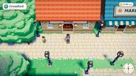 Verdelune | ||
 Une aventure de créatures originale avec des combats en temps réel, en 3D ou en 2D, en français ou en anglais. Se joue dans le navigateur, au clavier ou à la manette. | ||
| Projet | ||
|---|---|---|
Vagues | ||
Quelques photos prises sur l’eau. Cliquez sur une photo pour la voir en grand. 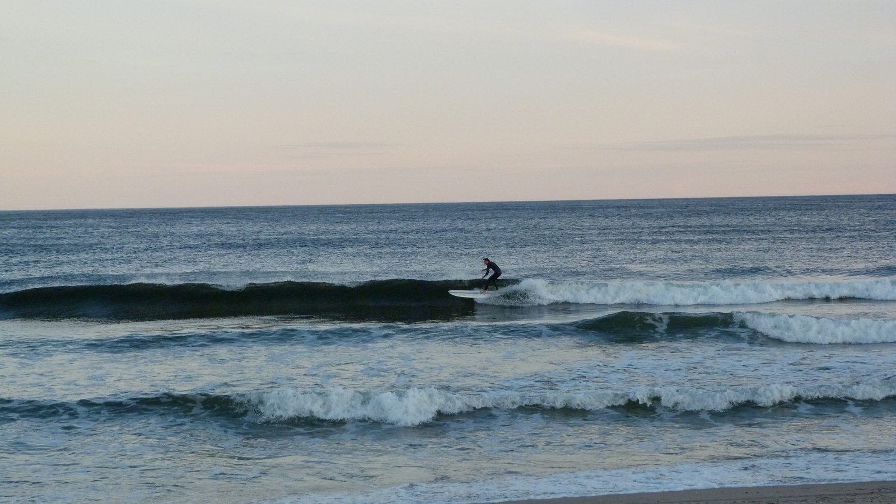 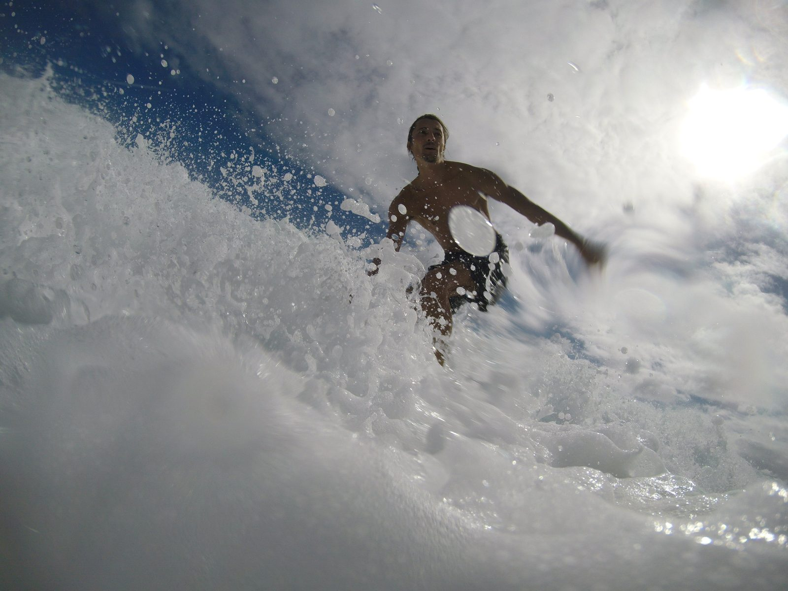 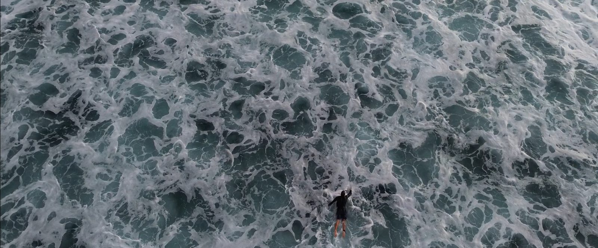 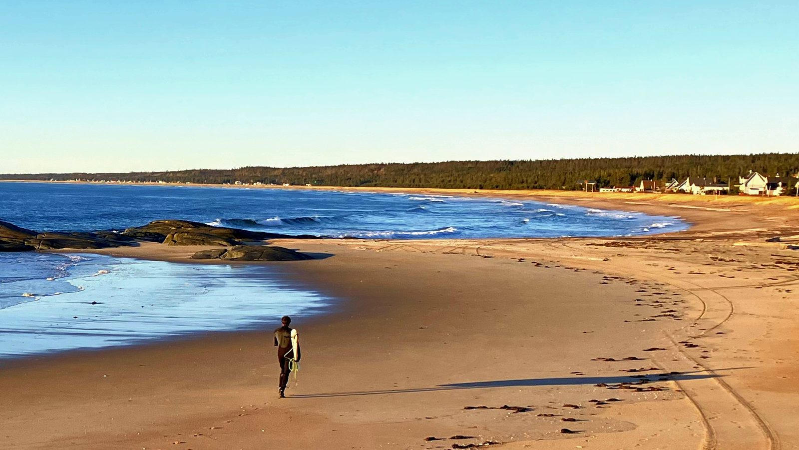 | ||